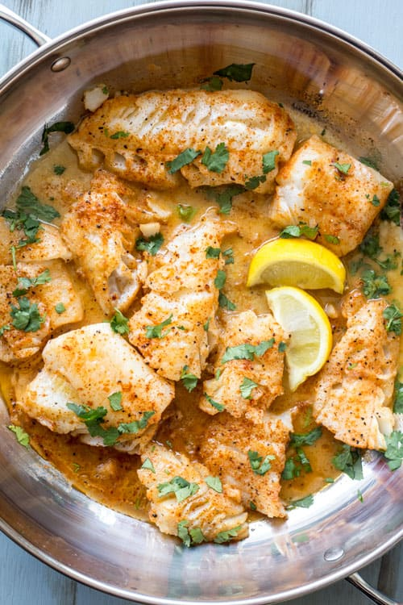

Boiled Cod with Butter and Mustard

Description
A simple and quick recipe for Cod Fish
that is seasoned and cooked in butter and mustard with herbs and fresh lemon.
Ingredients
- 1.5 lbs of Cod fish
- 6 Tbsp of Butter
- 2 Tbsp of Mustard
- 1/4 tsp of Garlic Powder
- 1/2 tsp of Salt
- 1/4 tsp of Black Pepper
- 1 tsp of Paprika
- 1 tsp of Fresh Herbs
- Lemon Slices
Steps
- Combine dry seasoning ingredients
- Clean Cod fish with cold water
- Cut fish into pieces
- Season all sides of the Cod with the cobined seasoning
- Combine mustard and Cod
- Heat 2 Tbsp of butter in larger skillet
- Once heated, cook Cod for 2 minutes
- Turn heat to medium and cook the other side for 3-4 minutes
- Add additional butter to liking
- Drizzle Cod with lemon juice
- Sprinkle herbs!